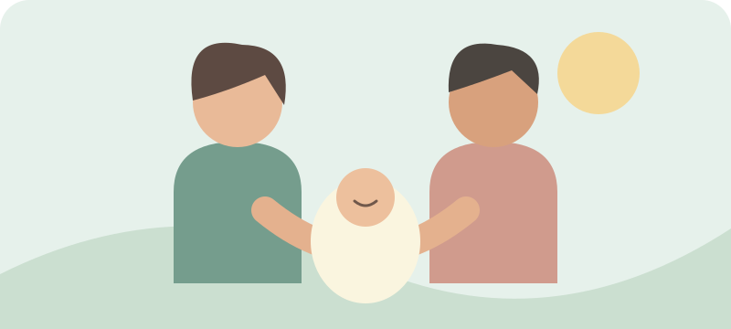

EN LITEN STØTTE I HVERDAGEN
Velkommen til Little Baby
Små tips, felles oversikt og plass til deres hverdag som foreldre.

Se tre tips for barnets alder
Hva vil du utforske?
Velg et tema. Ta resten når det passer.
Se alle temaer
Dere som foreldre
Kladd til prototypen: Korte temaforslag som kan utvikles videre. Les mer hos kildene.
Generell informasjon. Helsestasjonen eller fastlegen kan gi råd tilpasset familien. Flere kilder kommer senere.